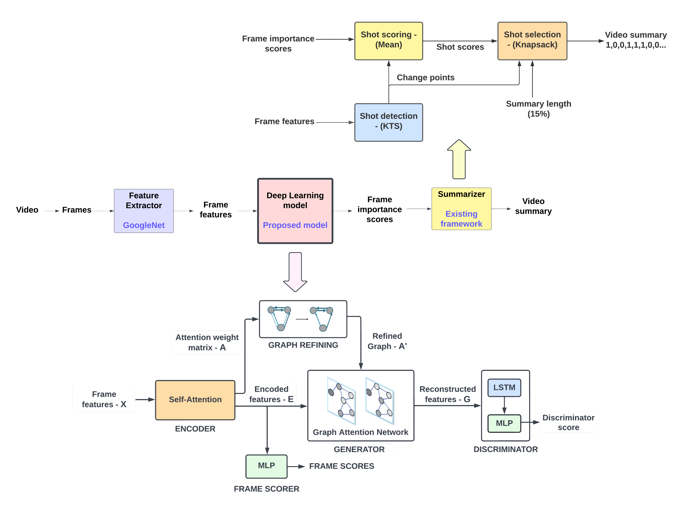

CEAS LAB 37
ABSTRACT
Video summarization aims at identifying the most important parts of a video that can summarize the video storyline. We propose an unsupervised learning method to perform automatic video summarization by selecting key-shots in the video. Our main idea is to adversarially train a model that employs graphs to interpret a video and attention mechanism to model temporal-dependencies among video frames. The graph representation of a video enables the model to learn the relationship among frames, revealing the intrinsic structure of the video. The attention mechanism, on the other hand, allows the model to capture the magnitude of these relationships. Both coupled together can yield a representation that captures the visual information required for estimating frame importance score. Our proposed model involves an attention-based encoder that transforms the features extracted from pre-trained CNN models into representations that can be used by a graph-based generator for video reconstruction and a discriminator that guides the generator by distinguishing the original and reconstructed video. The proposed model is trained incrementally using different loss functions, and its performance when evaluated on both TVSum and SumMe datasets achieves state-of-the-art result demonstrating the effectiveness of graph-based attention network.

To illustrate the model performance qualitatively by presenting the results for a sample video - "GoogaMooga Sneak Peek Joseph Leonard's Fried Chicken Sandwich cooking video" (Video-20 in TVSum Dataset)
The proposed model is able to predict the scores very close to the human annotated scores, proving the superiority of the model.
Given the objective of our unsupervised method and the outcomes obtained, we intend to evaluate our methodology on a variety of datasets going forward and to optimize the model to be able to apply it in various domains.